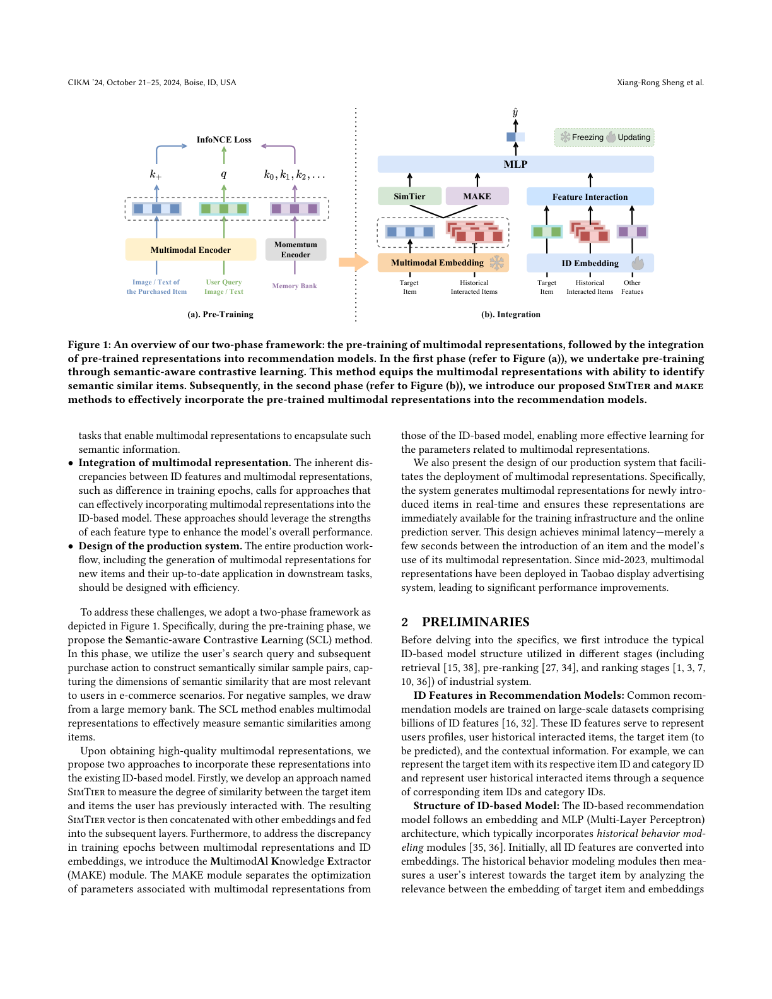
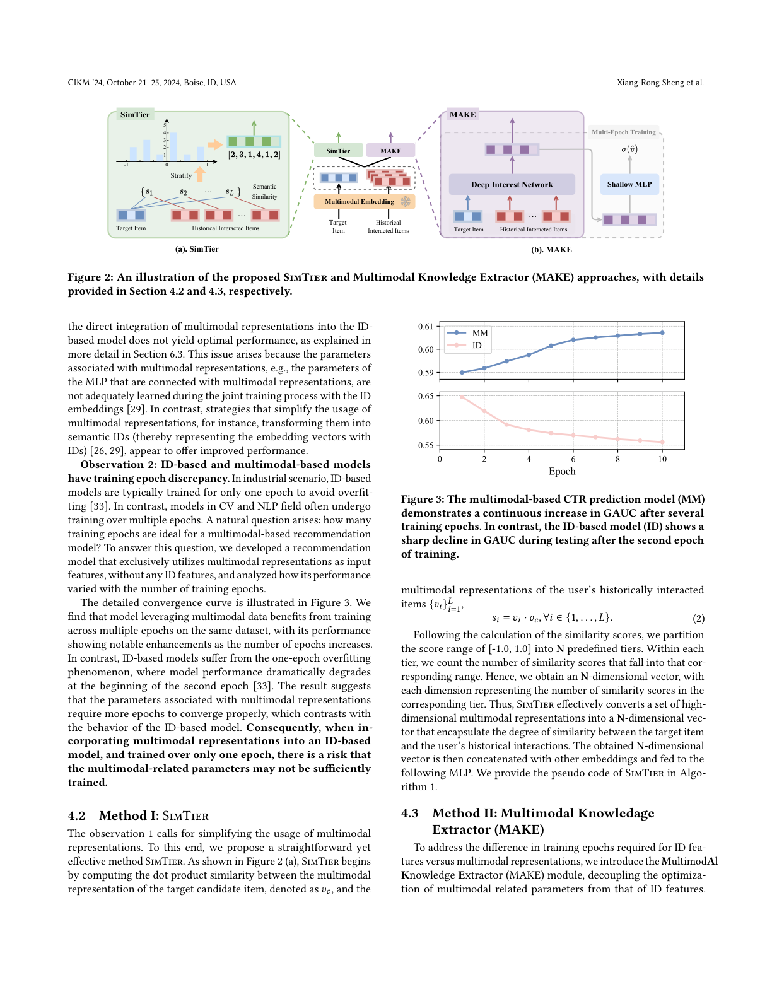
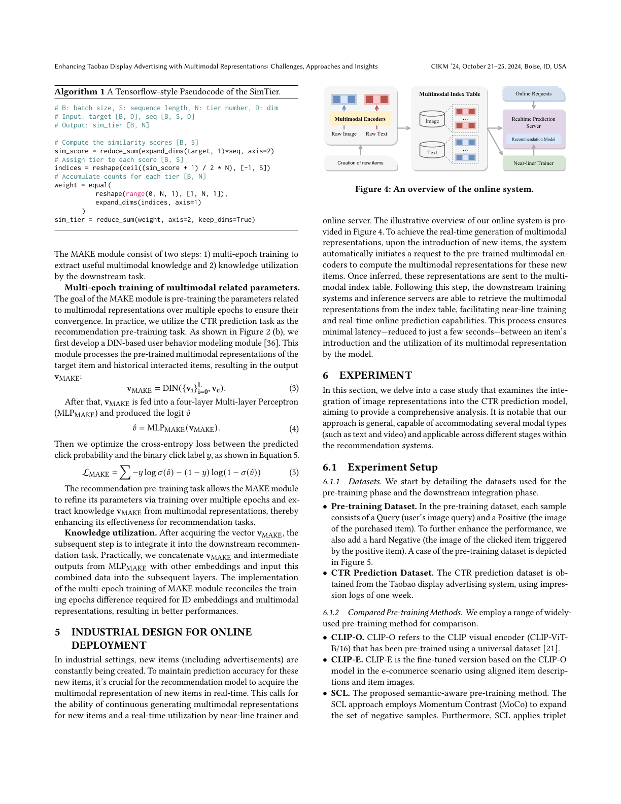
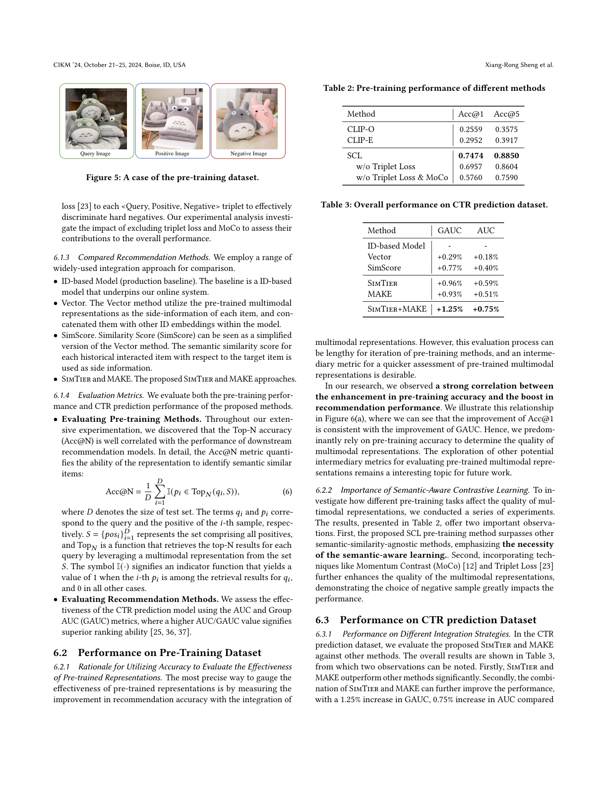
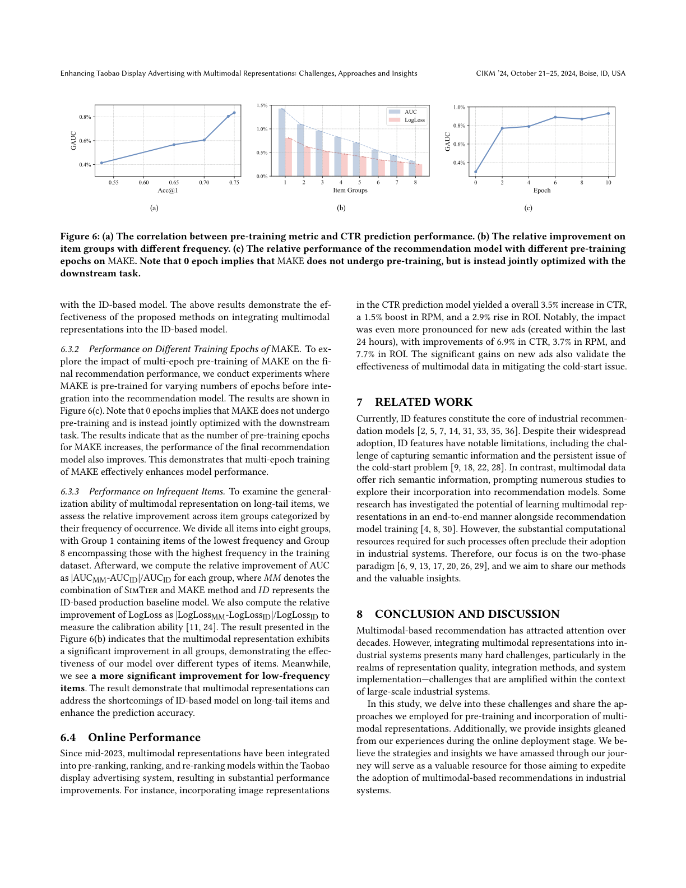

以「语义感知对比学习预训练 + SimTier / MAKE 集成」两阶段框架，将多模态表征高效落地于工业级推荐系统
尽管多模态数据提升模型精度的潜力已被公认，但包括淘宝展示广告系统在内的许多大规模工业推荐系统仍主要依赖稀疏 ID 特征。本文探索利用多模态数据提升推荐精度的方法。我们首先识别在工业系统中高效且低成本采用多模态数据的关键挑战；为此提出一个两阶段框架：(1) 预训练多模态表征以捕获语义相似性；(2) 将这些表征与已有 ID 模型集成。我们进一步详述了为便于部署多模态表征而设计的工业系统架构。自 2023 年中集成多模态表征以来，淘宝展示广告系统的性能显著提升。我们相信所积累的洞见将成为从业者利用多模态数据的宝贵资源。
传统上，淘宝展示广告系统（与许多工业系统一样）的推荐模型主要依赖离散 ID 作为特征。尽管 ID 模型应用广泛，但存在无法捕获多模态数据中语义信息等固有缺陷。部分工业系统尝试将多模态数据融入 ID 模型，通常采用两阶段框架：先通过通用或场景特定预训练获取多模态表征，再将其集成到推荐模型。
尽管如此，大量工业系统仍仅依赖 ID 特征，原因在于担忧多模态数据带来的性能增益可能无法弥补部署成本——包括预训练多模态编码器、为新商品增量生成表征、以及在线服务与近线训练系统的必要升级。因此，成功集成多模态表征的关键在于：在最小化部署成本的同时最大化性能收益。为此需应对三个实际挑战：
(1) 预训练任务设计——多模态表征的有效性取决于其能否提供 ID 特征难以捕获的有意义语义信息，需设计能让表征封装此类语义的预训练任务；(2) 多模态表征集成——ID 特征与多模态表征存在训练轮数等固有差异，需能有效将前者融入后者、并发挥各自优势的方法；(3) 生产系统设计——包括为新商品生成表征并即时用于下游任务的整体流程需高效。
为应对这些挑战，我们采用图 1 所示两阶段框架。预训练阶段提出语义感知对比学习（SCL）：利用用户搜索查询与后续购买行为构造语义相似样本对，并从大记忆库中抽取负样本，使表征能度量商品间语义相似度。获得高质量表征后，提出两种集成方案：SimTier——度量目标商品与用户历史交互商品的相似程度，将结果向量与其他嵌入拼接；MAKE——将多模态表征相关参数与 ID 模型参数的优化解耦，使其学习更有效。生产系统支持新商品多模态表征的实时生成与即时可用。自 2023 年中部署以来，淘宝展示广告系统性能显著提升。

工业系统不同阶段的推荐模型（检索、预排序、排序）通常基于数十亿级 ID 特征训练。这些 ID 特征表示用户画像、历史交互商品、目标商品与上下文信息。ID 模型遵循「嵌入 + MLP」架构，并常含历史行为建模模块：先将所有 ID 特征转为嵌入，历史行为建模模块通过分析目标商品嵌入与历史交互商品嵌入的相关性来衡量用户兴趣，输出定长向量后与其他 ID 嵌入拼接送入 MLP 得到最终预测。
多模态数据可改善历史行为建模，例如用商品图像度量目标商品与历史交互商品的视觉相似度——相似度越高，用户兴趣越可能强烈。这凸显了设计面向语义相似度判别的预训练任务的重要性。
SCL 吸引语义相似样本对、排斥不相似样本对。关键在于如何定义语义相似/不相似对——若定义不当，表征会漏掉相近商品（如三个几乎相同仅图案略异的枕头）的细微差别。我们用电商场景下的用户搜索查询与购买行为来构造语义相似对。
每个语义相似对，将 mini-batch 内其他样本作为不相似样本（即负样本）；并借鉴 MoCo，用动量更新模型以从更大记忆库中采样更多负样本。
采用 InfoNCE 损失（式 1），其中 $\tau$ 为可学习温度，记忆库大小 $K=196{,}800$。SCL 使表征能分辨相近商品间的细微差异，这对推荐模型至关重要。
直接将多模态表征与 ID 嵌入拼接再送入 MLP 的方法虽简单，但性能提升有限。我们分享两点观察：
观察 1：简化多模态表征的使用可提升性能。 直接集成效果并不最优，因为多模态相关参数在联合训练中未被充分学习；而将其转化为语义 ID 等简化用法反而更好。观察 2：ID 模型与多模态模型存在训练轮数差异。 工业 ID 模型通常仅训练 1 轮以避免过拟合，而 CV/NLP 模型常训练多轮；多模态推荐模型在多次 epoch 下性能显著提升（图 3），说明多模态参数需要更多轮数收敛。

SimTier 计算目标候选商品表征 $v_c$ 与用户历史交互商品表征 $\{v_i\}_{i=1}^L$ 的余弦相似度 $s_i=v_i\cdot v_c$（式 2），将 $[-1,1]$ 划分为 $N$ 个分层，统计落入各层的相似度个数，得到 $N$ 维向量，再与其他嵌入拼接送入 MLP。
MAKE 将多模态相关参数的优化与 ID 特征解耦，分两步：(1) 多模态参数多轮训练——以 CTR 预测为预训练任务，用 DIN 模块处理目标与历史商品的多模态表征得 $v_{MAKE}=DIN(\{v_i\},v_c)$（式 3），经 4 层 MLP 得 logit $\hat v=MLP_{MAKE}(v_{MAKE})$（式 4），优化交叉熵损失（式 5）；(2) 知识利用——将 $v_{MAKE}$ 与 MLP 中间输出拼接送入下游层。多轮训练调和了 ID 嵌入与多模态表征的轮数差异。
工业环境中新商品（含广告）不断产生，需实时获取其多模态表征。如图 4，新商品入库后系统自动请求预训练多模态编码器计算表征并写入多模态索引表，下游训练系统与推理服务器从该表检索，实现近线训练与实时在线预测。整个过程延迟仅数秒。

以图像表征集成到 CTR 预测模型为案例研究（方法通用，可容纳文本、视频等多种模态）。
预训练数据集每样本含 Query（用户图像查询）与 Positive（所购商品图像），并加入 hard Negative（由正样本触发的点击商品图像）；CTR 预测数据集取自淘宝展示广告一周曝光日志。对比预训练方法：CLIP-O（通用预训练）、CLIP-E（电商微调）、SCL（本文，用 MoCo 扩充负样本并加 Triplet Loss）。对比集成方法：Vector（直接拼接）、SimScore（相似度分）、SimTier、MAKE。评测：预训练用 Acc@N（式 6，检索语义相似商品的能力），CTR 用 AUC/GAUC。
我们发现预训练 Acc@1 的提升与 GAUC 提升高度一致（图 6a），故以预训练精度作为主要质量指标。SCL 显著优于语义无关方法，且 MoCo 与 Triplet Loss 进一步提升了表征质量。

SimTier 与 MAKE 显著优于其他方法，二者结合再提升（GAUC +1.25%）。图 6c 显示 MAKE 预训练轮数越多性能越好，验证多轮训练有效。图 6b 显示低频（长尾）商品提升更明显，说明多模态表征缓解了 ID 模型在长尾上的短板与冷启动问题。
自 2023 年中集成以来，多模态表征已用于淘宝展示广告的预排序、排序与重排模型：CTR 整体 +3.5%、RPM +1.5%、ROI +2.9%；新广告（24 小时内创建）提升更显著——CTR +6.9%、RPM +3.7%、ROI +7.7%，印证多模态数据对冷启动的有效性。

ID 特征当前仍是工业推荐模型核心，但存在难以捕获语义信息、冷启动等局限；多模态数据富含语义，已有研究探索端到端联合训练（计算开销大，难用于工业）与两阶段范式（本文所采用）。本文聚焦两阶段方法并分享经验与洞见。
基于多模态的推荐已受关注数十年，但将其集成到工业系统面临表征质量、集成方法与系统实现三大挑战，且在大规模系统中被放大。本文深入这些挑战，分享了预训练与集成方法，以及在线部署阶段的经验洞见。我们相信所积累的策略与洞见，能为加速工业系统中多模态推荐的落地提供宝贵参考。